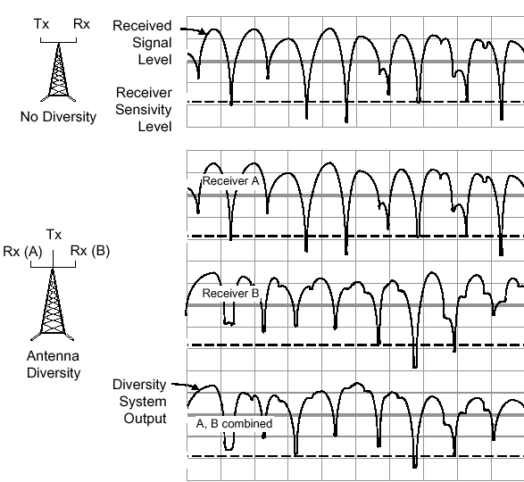

Существует много проблем, возникающих при передачи радиосигналов. Рассмотрим некоторые наиболее известные их них [1,6,16,19].
Потери на пути распространения радиосигналов (Path loss) - это потери, возникающие тогда, когда принимаемый сигнал становится всё слабее и слабее из-за увеличения расстояния между MS и BТS. Проблема PL редко ведёт к разрыву соединения (droppedcalls), потому что как только проблема становится экстремальной, соединение переключается на другую BТS и PL становится, соответственно, меньше.
Затенения (Shadowing)случаются тогда, когда на пути распространения радиосигнала между MS и BТS возникают физические препятствия, например, холмы, здания, деревья и т.д. Препятствия создают эффект затенения, который уменьшает уровень сигнала (signalstrength). Уровень сигнала в процессе движения MS флуктуирует в зависимости от возникающих препятствий на пути между MS и BТS.
Действующие на сигнал замирания изменяют уровень сигнала. Снижение уровня сигнала называется глубиной замирания (fadingdips). На рис.4.12 показаны препятствия, возникающие на пути распространения сигнала между MS и BТS.
Рис.4.12. Препятствия на пути передачи радиосигнала
Многолучёвые замирания (Multipath fading) возникают тогда, когда существует более чем один путь распространения радиоволны между MS и BТS и, в связи с этим, к приёмнику приходит более чем один сигнал. Последнее связано с многократным отражением радиосигнала от таких препятствий, как горы, здания, располагающиеся либо близко, либо далеко от приёмников.
Релеевские замирания сигналов (Rayleigh fading) возникают тогда, когда сигнал достигает приёмника по нескольким путям от базовой станции (рис.4.13).
Рис.4.13.Причина Релеевских замираний
В этом случае сигнал не принимается по линии прямой видимости прямо от передающей антенны, а приходит с разных направлений, отражаясь от зданий. Релеевские замирания сильно выражены тогда, когда препятствия располагаются близко к приёмной антенне. Результирующий принятый сигнал представляет собой сумму сигналов, пришедших с разной амплитудой и фазой. Глубина замираний и их периодичность зависят от скорости движения MS и рабочей частоты. Расстояние между замираниями приблизительно составляет половину длины волны колебания. Для систем GSM 900 расстояние между двумя замираниями составляет 17см.
Временная дисперсия (Time Dispersion)является дополнительной проблемой, связанной с многолучёвым характером распространения радиоволн между MS и BТS.
Однако в данном случае в сравнении с Релеевскими замираниями, отражённый сигнал приходит к приёмной антенне, отражаясь от достаточно удалённых объектов, таких как горы, холмы.
Временная интерференция вызывает межсимвольную интерференцию (Inter-Symbol Interference - ISI), где последовательные символы (биты) интерферируют друг с другом, что затрудняет приёмнику правильно определять символы.
Примером может служить рис.4.14, где представлена передача последовательности 1, 0 от BTS.
Рис.4.14. Временная дисперсия
Если отраженный сигнал приходит после прохождения одного бита прямого сигнала, то приёмник обнаруживает «1» от отраженной волны и в то же самое время «0» от прямой радиоволны. Поэтому символ «1» интерферирует с символом «0» и MS не знает, какой из этих символов является правильным.
Временное наложение (Time Alignment). Каждая MS во время обслуживания вызова занимает один TS внутри кадра TDMA. Другими словами, мобильная станция занимает определённый временной интервал, в течение которого MS передаёт информацию на BТS.
Проблема временного наложения проявляется тогда, когда часть информации, переданная MS, не приходит в занимаемом TS. Вместо этого не пришедшая часть информации придёт в следующем TS, следовательно, может интерферировать с информацией, передаваемой другой MS, использующей другой TS (рис.4.15).
Временное наложение возникает за счёт большого расстояния между MS и BТS. Сигнал же не может распространяться на большие расстояния внутри заданного значения временной задержки.
Рис.4.15. Временная задержка
Комбинированные потери сигнала (Combined Signal Loss). Все проблемы, возникающие при распространении сигнала, в частности те, которые были описаны выше, возникают и существуют независимо друг от друга. Однако в процессе обслуживания некоторых вызовов эти проблемы могут возникать одновременно. Такое наложение сигналов можно представить зависимостью изменения сигнала на входе приёмника MS в процессе её движения.
На рис. 4.16 представлена такая зависимость. На данном рисунке представлены суммарные потери в виде PL, затенений, Релеевских замираний (комбинированные потери сигнала). Уровень сигнала как глобальное среднее значение уменьшается с расстоянием (pathloss), что приводит к разрыву соединения. Вокруг глобального среднего существуют медленные вариации поля за счёт затенений и быстрые вариации за счёт Релеевских замираний.
Рис.4.16. Вариации сигнала с изменением расстояния
В любой другой точке флуктуации сигнала будут выглядеть так, как показано на рис.4.17.
Рис.4.17Флуктуации сигнала на антенне приёмника
Из рисунка видно, что чувствительность телефона не должна быть меньше минимального значения сигнала (на рис.4.17 это показано глубиной затухания). Например, если необходимо принять сигнал с мощностью –100 dBm, то чувствительность телефона должна быть не меньше (-104 dBm), а даже больше, в противном случае информация будет утеряна. Чтобы быть уверенным в том, что информация не будет потеряна, необходимо, чтобы глобальное среднее значение напряжённости поля было больше на такую величину dB, на какую в dB отклоняется самое большее замирание. Такой запас на замирание представляет собой разницу между чувствительностью и средним значением напряжённости поля.
Решение проблем, возникающих при передаче сигнала. При цифровой передаче данных качество переданного сигнала выражается в терминах «сколько некорректных битов информации было принято». Названием термина, характеризующего качество принятой информации, является частота ошибок по битам (BER – BitErrorRatio). BER определяет процентное отношение количества неправильно принятых битов к общему количеству переданных битов информации.
Данное отношение должно быть как можно ниже. В общем случае, данное отношение невозможно свести к нулю, это связанно с тем, что путь распространения радиоволн постоянно меняется. Это особенно важно в течение передачи данных по сравнению с передачей речи, для которой приемлемо более высокое количество BER, чем для данных.
Канальное же кодирование используется для обнаружения и коррекции ошибок в принимаемом потоке битов. Данное кодирование добавляет биты к сообщению, осуществляя избыточность сообщения, позволяя не только обнаруживать неправильные биты, но и исправлять.
Перемежение (Interleaving). Чаще всего на практике битовые ошибки появляются последовательно друг за другом. Это связанно с тем, что долговременные глубокие замирания воздействуют сразу же на несколько последовательных битов информации. Канальное кодирование эффективно используется в случаях появления одиночных ошибок и последовательностях короткой длины. В связи с этим, применение только канального кодирования не применимо в условиях появления длинных последовательностей ошибок.
Поэтому для избежание ошибочного приема битов вводится процесс Interleaving – интерливинга или перемежения (подробно рассматривался ранее). Этот процесс позволяет разбить последовательные биты сообщений так, чтобы эти биты не передавались последовательно друг за другом.
Рассмотрим в качестве примера блок сообщения, который может состоять из четырёх битов (1234). Если четыре таких последовательных блока передаются и один теряется, причём интерливинг отсутствует, то количество ошибок BER для всего сообщения составит 25%, а для потерянного сообщения 100%. И в этом случае восстановить его становится практически невозможным.
Если используется интерливинг, как показано на рис.4.18, то бит каждого блока может быть передан не последовательным способом. Если при передаче информации теряется один блок, то общее количество ошибок также составляет 25%. Однако такая потеря информации приводит к потере информации в каждом блоке, причём количество BER для каждого блока составляет 25%. Данная ситуация считается более приемлемой, чем ранее, так как вероятность определения и восстановления канальным кодером становится больше.
Рис.4.18. Процесс интерливинга
Рис.4.19. Принятые блоки с учётом интерливинга
Разнесённый приём (AntennaDiversity). Использование разнесённого приёма позволяет получить больший уровень сигнала на выходе антенно-фидерного тракта посредством использования особенностей распространения радиоволн. Существует два типа разнесённого приёма:
• пространственное разнесение;
• поляризационное разнесение.
Пространственное разнесение. Для того чтобы увеличить уровень принимаемого сигнала BТS прибегают к пространственному разнесению антенной системы. В данной конструкции используется 2 антенны вместо одной. Если при разнесении используется 2 антенны, то вероятность того, что в одно и тоже время на обе антенны придут две одинаковые волны, на которые повлияли глубокие замирания, очень мала. В диапазоне 900 МГц, используя пространственное разнесение, можно достичь усиления сигнала в 3 dB, при этом расстояние между антеннами должно быть 5 – 6 метров (12 – 18 ) для горизонтального разнесения и 25*(12 – 18*) для вертикального разнесения. В диапазоне 1800 Мгц, расстояние должно быть уменьшено из-за меньшего значения длины волны.
Используя данный метод и выбирая сигнал с большим уровнем можно в значительной степени уменьшить воздействие замираний сигнала.
Следует отметить, что пространственное разнесение даёт немного большее усиление сигнала (до 5dBm), чем при использовании поляризационного приёма, но, в свою очередь требует большего пространства для монтажа антенн.
На рис.4.20 представлено влияние использования пространственного приёма.

Рис.4.20. Пространственное разнесение антенн
Поляризационное разнесение. При использовании поляризационного приёма антенны разнесённого приёма заменяются одной антенной с двойной поляризацией. Данная антенна имеет нормальный корпус, но имеет две различные поляризационные антенные решетки. Самые популярные антенны – это антенны с горизонтальной/вертикальной поляризацией и антенны, имеющие наклонную поляризацию в 45о. Две антенные решётки соединяются в одну соединительную схему, называемую Rx в BTS. Две антенные решетки могут также быть использованы как совмещённые Tx/Rx антенны. На практике считается, что коэффициент усиления с использованием двух типов разнесённого приёма одинаков, но в случае поляризационного приёма экономится размер монтажной площадки антенно-фидерной системы.
Адаптивная коррекция (AdaptiveEqualization)– метод, специально разработанный для решения проблем, связанных с временной дисперсией сигналов.Работа данного метода заключается в следующем:
За основу данного метода берется набор априорно известных битов информации, называемый тестовой последовательностью (training sequence). Данная последовательность известна как BTS, так и MS. BTS дает команду MS включить одну из этих последовательностей в передачу полезной информации по направлению к BTS.
MS включает в передаваемое сообщение по направлению к BTS тестовую последовательность (на рис.4.21, данная последовательность показывается буквой “S”). Однако, при передаче сообщения через радиоэфир, последнее может быть искажено (потеря нескольких бит информации).
Рис.4.21. Адаптивная коррекция
BTS принимает сообщение от MS и проверяет тестовую последовательность внутри передаваемого сообщения. После того, как сообщение принято, BTS сравнивает принятую тестовую последовательность с тестовой последовательностью, которую должна была использовать MS по указанию BTS. Если существует отличие междудвумя тестовыми последовательностями, это означает, что проблемы в радиоэфире воздействовали не только на тестовые последовательности, но так же и на полезную информацию.
После установления различия в тестовых последовательностях, BTS начинает процесс восстановления потерянной полезной информации. Для этого она использует апостериорную информацию о повреждениях внутри тестовой последовательности. Поскольку BTS делает предположения о радиоэфире на основе тестовых последовательностей, то результат адаптивного восстановления потерянной информации не может быть 100% -но удачным.
Несмотря на это применение такого метода дает достаточно хорошие результаты восстановления сигнала. К примеру, в качестве адаптивного эквалайзера в системе GSM используется эквалайзер Витерби (Viterbiequalizer).
Перескоки по частоте (Frequency Hopping). Как было указанно выше, Релеевские замирания частотно зависимы. Это означает, что глубина таких замираний различна в каждом из районов местности и на разных частотах. В связи с этим в системе GSM предусмотрена опция Frequency Hopping - перескоки по частоте для MS и BТS в процессе установления соединения. Одновременный перескок по частоте MS и BТS обуславливается точной взаимной синхронизацией.
Согласно рекомендациям стандарта GSM существует 64 последовательности перескока по частоте. Одна из этих последовательностей циклическая или последовательная, а 63 остальных – псевдослучайные, которые могут быть сконфигурированы самим оператором.
На рис.4.22, схематично представлен процесс перескока по частоте.
Рис.4.22. Перескоки по частоте
В течение кадра NTDMA используется несущая С1, в то время как в течение кадра N+1 используется несущая C2. Таким образом, на протяжении всего установленного соединения используется один и тот же временной интервал, но изменяются частоты согласно определённой последовательности перескока по частоте.
Временная задержка (Timing Advance). Применение временной задержки связанно с тем, что иногда возникают проблемы с временным наложением. Данное опережение позволяет передавать свои кадры раньше, чем устанавливается соединение (рис.4.23).
Рис.4.23. Временное опережение
В системе GSM временная задержка интерпретируется в битах.
Известно, что первый этап установления соединения от MS к BТS осуществляется по направлению «Uplink» (направление от MS к BS). Данное соединение происходит в виде передачи пакета доступа (AB - accessburst) по каналу параллельного доступа (RACH – randomaccesschannel).
Пакет доступа кроме первого этапа установления соединения используется при осуществлении хэндовера, при этом используется уже не канал RACH, а канал управления с быстрым доступом (FACCH – FastAssociatedCommonControlChannel).
Основной характеристикой пакета доступа является то, что кроме последовательности синхронизации (49 бит) и битов кодирования (39 бит) в нем передается информация о временной задержке распространения сигнала от MS к BТS. Информация о временной задержке предаётся в защитном интервале (GB - guardperiod), размер которого составляет 68.25 бит, а длительность - 252 мксек. Графическая интерпретация временных кадров представлена на рис.4.24.
Рис.4.24. Графическая интерпретация интервал доступа
На рис.4.24 ТВ (tailbits)означает так называемые хвостовые биты, они предназначенные для выравнивания во временном кадре.
При первом установлении соединения MS не знает, на каком расстоянии она находится от BТS, и следовательно, не знает о величине временной задержки. Пакет доступа, который мобильная станция посылает со значением временной задержки «0» по отношению к ее внутренней временной базе, является достаточно небольшим по своим размерам и умещается во временном интервале 252 мксек, включая двойную максимальную задержку распространения сигнала по радиоканалу.
Использование временной задержки даёт возможность определять расстояние между мобильным абонентом и базовой станцией.
Максимальный радиус соты в стандарте GSM составляет 35 км. Это расстояние и определяется максимальной задержкой на распространение сигнала (63 бит).
Используя данные о значениях временной задержки, можно определить действующее расстояние между базовой станцией и подвижной станцией, которое может быть записано в виде произведения TA и множителя расстояния, формула 4.1.
, (4.1)
где TA – временная задержка для обычного радиуса сот; DRT – расстояние от мобильной станции до базовой станции, которое определяется как
, (4.2)
где v – скорость света ; t = 1 бит = 48/13 [мксек].